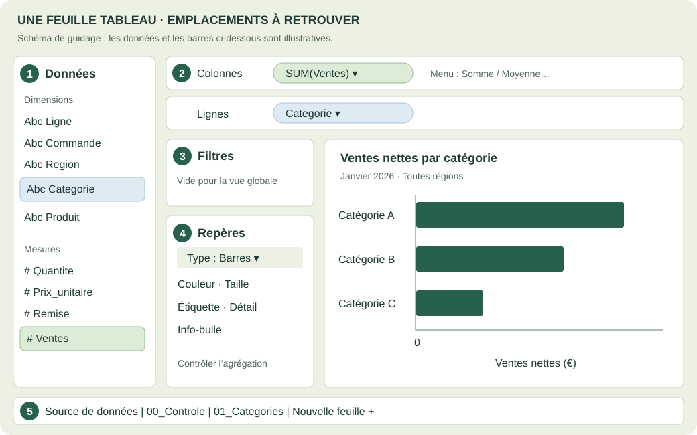
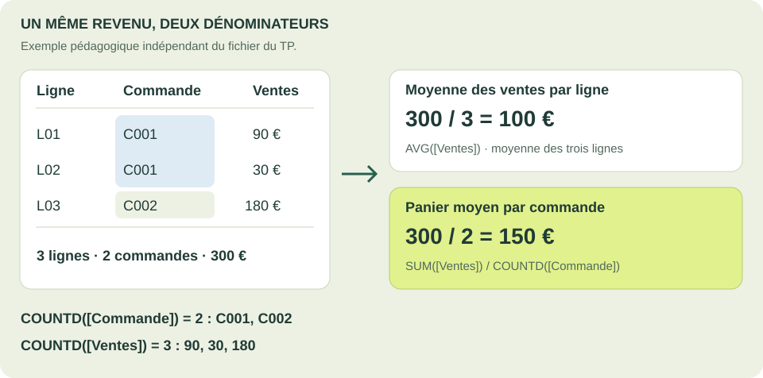

TP de fin de journée · Après les blocs 1 à 3 · Troisième année
Construire et auditer ses premières vues.
Passer du graphique plausible à une analyse vérifiable : manipuler, calculer, croiser, tester et défendre ses résultats.
Mission · Niveau troisième année
Construire une analyse commerciale vérifiable
Objectif : construire une analyse que l’on peut vérifier : contrôler le grain des données, choisir une agrégation, croiser des dimensions, calculer des indicateurs et diagnostiquer une vue trompeuse.
Une responsable commerciale veut décider où approfondir son analyse. Son export contient des lignes de commandes : une commande peut acheter plusieurs produits. Votre mission consiste à produire un classeur d’audit et une recommandation étayée, utilisables lors de sa réunion.
Résumé général : vous partez d’une source unique, construisez des vues par catégorie et région, vérifiez leur cohérence, puis testez ce que les filtres et les calculs changent réellement. Chaque étape enrichit le même classeur.
Quand commencer : en fin de journée, sur consigne du formateur, après les cours et les manipulations des blocs 1 à 3. Ce TP rassemble les apprentissages ; il ne constitue pas la suite immédiate de l’installation.
Prérequis : savoir connecter un CSV, construire une vue, choisir une agrégation et manipuler les filtres. Les blocs 1 à 3 apportent ces bases. Le comptage distinct, les ratios et les contrôles spécifiques sont expliqués dans les repères de ce TP avant leur utilisation.
Organisation : 3 h 30 indicatives, hors pause : 25 min de prise en main des repères, puis 25 + 25 + 30 + 35 + 35 + 25 min pour les six exercices et 10 min de QCM. Travail individuel, avec comparaison des diagnostics à deux en fin de séance.
Ce TP utilise un nouveau fichier simulé : tp01_commandes_detail.csv. Il ne remplace pas les petits CSV des autres cours. Il ne contient ni coûts ni marges. Les dates et la répartition commerciale sont pédagogiques ; elles ne constituent pas un échantillon représentatif d’une entreprise réelle.
Repères avant de pratiquer
Comprendre l’export avant de le visualiser
↓ Télécharger tp01_commandes_detail.csv
| Ligne | Commande | Produit | Quantite | Remise | Ventes |
|---|---|---|---|---|---|
| L001 | C001 | Ordinateur | 1 | 0 | 850.00 |
| L002 | C002 | Ecran | 2 | 0.05 | 418.00 |
| L003 | C002 | Bureau | 3 | 0.15 | 790.50 |
| L004 | C003 | Chaise | 3 | 0.10 | 378.00 |
| L005 | C003 | Clavier | 4 | 0 | 240.00 |
| L006 | C003 | Ordinateur | 1 | 0.10 | 765.00 |
Le fichier attendu contient 60 lignes, 30 commandes, 6 produits, 3 catégories, 3 régions et 2 canaux. Les commandes couvrent janvier 2026. Ces effectifs constituent des contrôles de réception, pas une preuve suffisante de qualité.
| Champ | Type à vérifier | Sens et contrôle |
|---|---|---|
| Ligne | Texte / dimension | Identifiant unique d’une ligne de commande. |
| Commande | Texte / dimension | Identifiant de commande ; sa répétition peut être normale. |
| Date | Date | Date de la commande, au format AAAA-MM-JJ. |
| Region, Canal | Texte / dimensions | Une région et un canal par commande. |
| Categorie, Produit | Texte / dimensions | Un produit appartient à une catégorie. |
| Quantite | Nombre entier | Nombre d’unités de la ligne, strictement positif. |
| Prix_unitaire | Nombre décimal | Prix catalogue par unité, avant remise, en euros. |
| Remise | Nombre décimal | Taux : 0.10 représente 10 %, pas 0,10 %. |
| Ventes | Nombre décimal | Montant de la ligne après remise, en euros. |
Importer : choisissez Fichier texte, puis le CSV fourni. Vérifiez que les 11 colonnes sont distinctes. Si nécessaire, réglez le séparateur sur virgule et l’encodage sur UTF-8 ; les décimales du fichier utilisent le point. Vérifiez les icônes de type dans Source de données. Ne convertissez pas un montant en texte pour lui ajouter le symbole € : utilisez le format numérique.
Repères avant de pratiquer
Les notions qui changent le résultat
| Notion | Définition et utilité | Exemple |
|---|---|---|
| Grain | Ce que représente une ligne de la source. Il détermine ce que l’on compte. | Une ligne de produit dans une commande, pas forcément une commande entière. |
| Niveau de détail de la vue | Dimensions qui répartissent les lignes en groupes de repères. | Categorie donne trois groupes ; Categorie + Region en donne jusqu’à neuf. |
| Agrégation | Calcul effectué sur les lignes d’un groupe. | SUM additionne, AVG moyenne les lignes, COUNT compte les valeurs non nulles. |
| Comptage distinct | COUNTD compte les identifiants différents dans le périmètre. | Deux lignes de C001 représentent une seule commande. |
| ATTR | Attribut unique d’un groupe ; affiche * si plusieurs valeurs coexistent. | ATTR(Commande) ne peut pas nommer une commande unique dans une barre qui en regroupe plusieurs. |
| Filtre | Sélection qui restreint les lignes prises en compte dans les feuilles visées. | Nord conserve uniquement les lignes de cette région. |
Cas d’usage : une équipe commerciale contrôle son reporting avant une réunion. Le rapprochement entre export, vues et indicateurs évite de confondre nombre de lignes, nombre de commandes et revenu moyen. Le bénéfice attendu est une décision dont le périmètre et les calculs sont explicables.
Repères avant de pratiquer
Se repérer et construire sans deviner

Illustration indisponible. Utilisez sa légende et les consignes textuelles ci-dessous ; les schémas locaux restent fournis avec le support.
Sur cet exemple officiel, F repère la barre latérale, B les fiches et étagères, D la vue et I les onglets. Les données et la langue diffèrent de notre TP. Cette image est fixe et nécessite Internet ; le schéma local ci-dessous fournit les repères utiles hors connexion.

Illustration indisponible. Utilisez sa légende et les consignes textuelles ci-dessous ; les schémas locaux restent fournis avec le support.
Schéma pédagogique simplifié, pas une capture du logiciel. Les pastilles montrent les emplacements de départ. Les barres sont illustratives et ne donnent pas les résultats du fichier.
- Construire : déposez une dimension sur Lignes et une mesure sur Colonnes. Choisissez Barres dans Repères. Pour changer l’agrégation, ouvrez le menu de la pastille de mesure, puis Mesure et l’opération souhaitée. Les libellés peuvent être en français ou en anglais : Somme/SUM, Moyenne/AVG, Nombre/COUNT, Nombre distinct/COUNTD.
- Compter une dimension : déposez Commande sur Texte ou Info-bulle, ouvrez son menu et choisissez Nombre distinct. Vérifiez explicitement la pastille COUNTD(Commande) ; ne laissez pas Commande comme dimension par inadvertance.
- Comparer plusieurs indicateurs : placez Noms de mesures sur Colonnes et Valeurs de mesures sur Texte. Dans la liste Valeurs de mesures, gardez uniquement les indicateurs demandés. Utilisez le filtre Noms de mesures pour contrôler leur affichage. Conservez la source unique.
- Présenter : placez Ventes sur Étiquette et choisissez Somme. Pour le tri, ouvrez Trier sur la dimension et choisissez Champ, Ventes, Somme, décroissant. Pour le format, utilisez Format ou Propriétés par défaut → Format des nombres sur la mesure. Fixez les axes de barres à partir de zéro.
- Croiser : pour une matrice, placez Region sur Lignes, Categorie sur Colonnes et SUM(Ventes) sur Texte. Activez les totaux des lignes et des colonnes via Analyse → Totaux. Un total de comptage distinct doit être recalculé sur son périmètre, pas obtenu par addition naïve des cellules.
- Filtrer : placez Region sur Filtres, choisissez les valeurs, puis Afficher le filtre. Dans le menu de la fiche, contrôlez Appliquer aux feuilles de calcul : feuille courante ou feuilles sélectionnées. Retirer une fiche de l’écran ne supprime pas le filtre de l’étagère.
Ce petit exemple est indépendant du CSV du TP. Une même commande peut contenir plusieurs lignes de vente :
| Ligne | Commande | Ventes |
|---|---|---|
| L01 | C001 | 90 € |
| L02 | C001 | 30 € |
| L03 | C002 | 180 € |
COUNTD signifie « compter les valeurs distinctes ». Le champ entre crochets indique ce que l’on compte.
COUNT([Commande]) = 3: trois valeurs renseignées dans la colonne Commande, répétition de C001 comprise.COUNTD([Commande]) = 2: seulement deux identifiants différents, C001 et C002.COUNTD([Ventes]) = 3: trois montants différents, 90, 30 et 180 €. Ce calcul répond à une autre question.
Les trois montants sont donc bien distincts. Pour calculer le panier moyen par commande, on compte les identifiants de commande : C001 totalise 90 + 30 = 120 €, C002 totalise 180 €. Le panier moyen vaut (120 + 180) / 2 = 150 €, soit SUM([Ventes]) / COUNTD([Commande]).
En revanche, AVG([Ventes]) donne (90 + 30 + 180) / 3 = 100 € par ligne de vente. Le dénominateur représente alors les trois lignes, pas les deux commandes.

Illustration indisponible. Utilisez sa légende et les consignes textuelles ci-dessous ; les schémas locaux restent fournis avec le support.
Exemple indépendant du fichier du TP. Les deux lignes C001 appartiennent à la même commande : COUNTD([Commande]) vaut 2. Les trois montants sont différents : COUNTD([Ventes]) vaut 3.
Repères avant de pratiquer
Lire et vérifier les calculs
Dans Analyse → Créer un champ calculé, donnez le nom indiqué, saisissez la formule et vérifiez sa validité. Les noms de fonctions s’écrivent comme ci-dessous. Un calcul par ligne est ensuite agrégé dans la vue ; un calcul déjà agrégé apparaît généralement avec le préfixe AGG.
Ventes_recalculees
[Quantite] * [Prix_unitaire] * (1 - [Remise])Lecture : Quantite est le nombre d’unités ; Prix_unitaire est le prix catalogue ; Remise est un taux entre 0 et 1. Le produit donne le montant net de chaque ligne.
Exemple et résultat : 3 unités à 100 € avec 10 % de remise : 3 × 100 × (1 − 0,10) = 270 €.
Vigilance : Ne pas écrire 10 pour 10 %, ni sommer les prix avant de multiplier les quantités.
Ecart_controle
[Ventes_recalculees] - [Ventes]Lecture : Écart entre le montant recomposé et celui du fichier, sur chaque ligne. Un résultat proche de zéro indique l’accord de ces deux calculs.
Exemple et résultat : 270 − 270 = 0 €. Contrôlez MIN et MAX, pas seulement la somme : +5 et −5 s’annulent.
Vigilance : Tolérance pour ce fichier : moins de 0,01 € en valeur absolue par ligne, à cause de la représentation décimale.
Panier_moyen
SUM([Ventes]) / COUNTD([Commande])Lecture : La somme des ventes est divisée par le nombre de commandes différentes du groupe visible. Chaque commande compte une fois.
Exemple et résultat : Dans l’exemple à trois lignes : 300 / 2 = 150 € par commande.
Vigilance : Après un filtre de catégorie, ce ratio ne mesure plus le panier complet : seules les lignes conservées contribuent au numérateur.
Prix_net_unitaire
SUM([Ventes]) / SUM([Quantite])Lecture : Rapport du revenu net aux unités vendues ; il tient compte du poids des quantités et des remises.
Exemple et résultat : 1 unité à 100 € et 3 à 10 €, sans remise : (100 + 30) / (1 + 3) = 32,50 €. La moyenne simple des deux prix est 55 €.
Vigilance : Le mix de produits influence cet indicateur : ce n’est pas le prix d’un produit type.
Nb_commandes
COUNTD([Commande])Lecture : Nombre d’identifiants distincts dans le groupe, en ignorant les valeurs nulles.
Exemple et résultat : C001, C001, C002 donnent 2 commandes.
Vigilance : Les catégories se recouvrent si une commande achète plusieurs catégories ; leurs effectifs distincts ne sont alors pas additifs.
Conditions de calcul : les quantités sont strictement positives et les identifiants sont renseignés dans ce fichier. Un groupe de lignes existant a donc un dénominateur non nul. Un filtre qui ne conserve aucune ligne ne doit pas être interprété comme un panier égal à zéro.
Exécution : les champs entre crochets fournissent les valeurs d’entrée ; Tableau évalue les deux premiers calculs ligne par ligne. Les fonctions SUM et COUNTD regroupent ensuite les lignes selon les dimensions et filtres de la feuille. Modifier ce périmètre recalcule les ratios. Une formule telle que SUM([Ventes]) / [Quantite] mélange deux niveaux et doit être corrigée avant validation.
Q01–Q06 · 25 min
Exercice 1 — Auditer la source
Objectif pédagogique : Distinguer ligne, commande et unité ; vérifier les types et la cohérence de l’export.
Prérequis : Dictionnaire, import et comptage distinct.
Créez la feuille 00_Controle. Construisez une table avec Noms de mesures et Valeurs de mesures. Ajoutez COUNT(Ligne), COUNTD(Ligne), COUNT(Commande), COUNTD(Commande), SUM(Quantite) et SUM(Ventes). Ne filtrez aucune ligne.
Contraintes : utilisez uniquement le CSV fourni ; conservez les feuilles de référence ; répondez avec une valeur, une justification ou une capture explicitement demandée. Les essais temporaires doivent être restaurés.
- Q01 Quel est le grain exact du fichier ? Formulez une phrase précise et expliquez pourquoi plusieurs occurrences de Commande ne suffisent pas à prouver un doublon.
- Q02 Relevez les six valeurs de la feuille de contrôle. Quelles égalités doivent être vraies si Ligne est unique et si les identifiants sont complets ?
- Q03 Vérifiez les 11 types de champs et justifiez la distinction entre un identifiant texte et une mesure numérique. Pourquoi SUM(Commande) n’a-t-il pas de sens ?
- Q04 Vérifiez les dates extrêmes, les valeurs distinctes des dimensions et l’absence de valeurs manquantes. Pour une commande à plusieurs lignes, contrôlez la cohérence de sa date, de sa région et de son canal.
- Q05 Affichez Remise en pourcentage. Relevez ses valeurs distinctes et contrôlez la ligne L004 à la main : quantité, prix, remise et vente nette.
- Q06 Documentez trois risques de qualité possibles sur un futur export et le contrôle qui les détecterait. Distinguez répétition normale de Commande, duplication de Ligne et donnée manquante.
Livrable : Une feuille 00_Controle et un tableau de vérification Q01–Q06.
Réussite observable : Les effectifs correspondent au fichier ; chaque champ a un type justifié ; le grain est explicite.
Indice 1 — Orienter la recherche
Pour repérer un doublon de Ligne, comparez son comptage à son comptage distinct. Pour les valeurs manquantes, comparez COUNT(champ) à COUNT(Ligne) ou inspectez les valeurs Null dans une vue dédiée.
Indice 2 — Débloquer la manipulation
Une commande peut contenir plusieurs produits. Contrôlez une commande telle que C003 en affichant Ligne, Commande, Date, Region et Canal dans une feuille de travail temporaire.
La correction détaillée est réservée au dossier formateur et présentée après la recherche.
Q07–Q12 · 25 min
Exercice 2 — Construire et justifier les agrégations
Objectif pédagogique : Choisir la mesure et l’agrégation qui répondent à la demande.
Prérequis : Contrôle validé ; opérations SUM, AVG, COUNTD et ATTR.
Créez 01_Categories : Categorie sur Lignes, SUM(Ventes) sur Colonnes, Barres dans Repères. Affichez les montants et triez par somme décroissante. Les essais se font sur une duplication temporaire pour préserver la vue de référence.
Contraintes : utilisez uniquement le CSV fourni ; conservez les feuilles de référence ; répondez avec une valeur, une justification ou une capture explicitement demandée. Les essais temporaires doivent être restaurés.
- Q07 Avant de construire, prévoyez le nombre de barres et la signification d’une barre. Relevez ensuite le résultat et expliquez tout écart avec votre prévision.
- Q08 Donnez le classement des catégories et leurs montants. Rapprochez la somme des trois barres du contrôle général, puis calculez la part de la catégorie en tête avec une division explicitée dans votre note.
- Q09 Remplacez temporairement SUM(Ventes) par AVG(Ventes). Relevez les trois valeurs et donnez leur unité exacte. Pourquoi ne s’agit-il pas automatiquement d’un panier moyen ?
- Q10 Comparez les effectifs COUNT(Ligne) et COUNTD(Commande) par catégorie. Leur égalité éventuelle dans une catégorie suffit-elle à prouver qu’une commande ne contient jamais plusieurs catégories ?
- Q11 Ajoutez ATTR(Commande) dans l’info-bulle : interprétez le symbole *. Remplacez-le par COUNTD(Commande), puis ajoutez SUM(Quantite). Quels renseignements deviennent lisibles sans modifier le grain de la vue ?
- Q12 Rétablissez SUM(Ventes), le tri décroissant et une origine d’axe à zéro. Produisez un titre avec mesure, dimension et période ; justifiez l’unité, les décimales et une couleur sobre.
Livrable : La feuille 01_Categories, une capture lisible et le tableau comparant somme, moyenne et effectifs.
Réussite observable : Trois barres ; total conservé ; agrégations nommées ; aucune commande brute sur Détail dans la vue finale.
Indice 1 — Orienter la recherche
Lisez le préfixe de la pastille avant de commenter le chiffre. La moyenne est calculée sur les lignes du groupe.
Indice 2 — Débloquer la manipulation
Si Commande apparaît comme une dimension dans Repères, ouvrez son menu et choisissez Attribut pour l’essai, puis Nombre distinct pour le comptage.
La correction détaillée est réservée au dossier formateur et présentée après la recherche.
Q13–Q18 · 30 min
Exercice 3 — Croiser régions et catégories
Objectif pédagogique : Passer des totaux marginaux à une analyse croisée et reconnaître les effectifs non additifs.
Prérequis : Deux dimensions, mesure agrégée, matrice et totaux.
Dupliquez la vue en 02_Regions et remplacez Categorie par Region. Créez ensuite 03_Matrice avec Region sur Lignes, Categorie sur Colonnes, SUM(Ventes) sur Texte ; gardez la même source et aucun filtre.
Contraintes : utilisez uniquement le CSV fourni ; conservez les feuilles de référence ; répondez avec une valeur, une justification ou une capture explicitement demandée. Les essais temporaires doivent être restaurés.
- Q13 Donnez le classement des régions et vérifiez le total. Peut-on déduire, à partir des seules vues 01 et 02, la catégorie dominante de chaque région ? Justifiez.
- Q14 Construisez la matrice des neuf combinaisons. Relevez ses valeurs et vérifiez ses totaux par ligne, par colonne et son total général.
- Q15 Dans la matrice, transformez le type de repère en Carré, ajoutez SUM(Ventes) sur Couleur et conservez les montants sur Étiquette. Choisissez une palette séquentielle et expliquez pourquoi une échelle partagée est nécessaire.
- Q16 Pour chaque région, identifiez la catégorie dominante et calculez sa part du revenu régional. La région qui a le plus de ventes est-elle forcément celle où cette catégorie pèse le plus ?
- Q17 Dans une copie de la matrice, remplacez le montant par COUNTD(Commande). Additionnez les trois effectifs par catégorie puis comparez à COUNTD(Commande) sans catégorie. Expliquez le décalage et contrôlez les options des totaux plutôt que de forcer une somme.
- Q18 Trouvez une commande présente dans plusieurs catégories et utilisez ses lignes comme preuve. Expliquez pourquoi les montants peuvent être additionnés entre catégories alors que les nombres de commandes ne le peuvent pas toujours.
Livrable : 02_Regions et 03_Matrice, deux captures, une preuve de recouvrement et les calculs de parts.
Réussite observable : Les neuf cellules se rapprochent des totaux ; la preuve nomme une commande réelle du fichier ; la palette ne masque pas les montants.
Indice 1 — Orienter la recherche
Le total régional est le dénominateur d’une part régionale. Gardez le même dénominateur pour toutes les catégories de cette région.
Indice 2 — Débloquer la manipulation
Inspectez C003 et comparez ses catégories. COUNTD est recalculé sur les identifiants du périmètre total ; additionner les cellules recompte certaines commandes.
La correction détaillée est réservée au dossier formateur et présentée après la recherche.
Q19–Q24 · 35 min
Exercice 4 — Calculer les bons indicateurs
Objectif pédagogique : Distinguer calcul par ligne et calcul agrégé ; contrôler les ratios.
Prérequis : Lecture des cinq formules ; création d’un champ calculé.
Créez les cinq champs décrits dans les repères. Ajoutez MIN(Ecart_controle) et MAX(Ecart_controle) à 00_Controle. Construisez 04_Indicateurs avec Region sur Lignes et un tableau présentant SUM(Ventes), Nb_commandes, AVG(Ventes), Panier_moyen et Prix_net_unitaire.
Contraintes : utilisez uniquement le CSV fourni ; conservez les feuilles de référence ; répondez avec une valeur, une justification ou une capture explicitement demandée. Les essais temporaires doivent être restaurés.
- Q19 Créez Ventes_recalculees et Ecart_controle. Vérifiez L004, puis les écarts minimum et maximum sur tout le fichier. Pourquoi SUM(Ecart_controle) = 0 ne suffit-il pas ?
- Q20 Calculez le panier moyen global et la moyenne globale de Ventes. Décrivez les deux dénominateurs et expliquez leur différence sur ce fichier.
- Q21 Relevez les cinq indicateurs de chaque région. Le classement par revenu total est-il identique au classement par panier moyen ? Quelle décision chaque indicateur peut-il éclairer ?
- Q22 Calculez Prix_net_unitaire global et comparez-le à AVG(Prix_unitaire). Donnez deux raisons expliquant leur différence. Vérifiez aussi le petit exemple numérique fourni dans les repères.
- Q23 Un collègue propose SUM([Ventes]) / [Quantite]. Expliquez pourquoi Tableau refuse ce mélange. Corrigez la formule selon la question « revenu net par unité vendue », puis commentez le préfixe AGG dans la vue.
- Q24 Comparez En ligne et Magasin avec AVG(Ventes), Panier_moyen et Nb_commandes dans une vue temporaire. Le diagnostic change-t-il selon l’indicateur ? Formulez une conclusion qui précise l’unité et le périmètre.
Livrable : Les cinq champs, 04_Indicateurs et une note de calcul Q19–Q24.
Réussite observable : Écarts vérifiés ligne par ligne par leurs extrêmes ; ratios cohérents ; aucune confusion entre prix catalogue, revenu net et panier.
Indice 1 — Orienter la recherche
Un panier est calculé par commande distincte, une moyenne de Ventes par ligne. Relisez le grain de la source.
Indice 2 — Débloquer la manipulation
Dans le tableau, les champs Panier_moyen et Prix_net_unitaire sont déjà agrégés. Ne tentez pas de sommer les paniers régionaux pour calculer le panier global.
La correction détaillée est réservée au dossier formateur et présentée après la recherche.
Q25–Q30 · 35 min
Exercice 5 — Tester les filtres et réparer une vue
Objectif pédagogique : Rendre une anomalie reproductible, l’expliquer et vérifier sa correction.
Prérequis : Contrôle du périmètre des filtres, niveau de détail et calculs.
Dupliquez 01_Categories en 05_Diagnostic. Notez l’état initial puis suivez les essais un par un. Gardez 00_Controle sans filtre comme référence globale. À la fin, restaurez les feuilles de production et laissez 05_Diagnostic avec Region = Nord, visible dans le titre et la fiche.
Contraintes : utilisez uniquement le CSV fourni ; conservez les feuilles de référence ; répondez avec une valeur, une justification ou une capture explicitement demandée. Les essais temporaires doivent être restaurés.
- Q25 Appliquez Region = Nord uniquement à 05_Diagnostic. Relevez son total et comparez-le à 00_Controle. Pourquoi cette différence est-elle normale ? Vérifiez la portée du filtre dans son menu.
- Q26 Appliquez temporairement ce filtre aux seules feuilles 02_Regions et 03_Matrice en plus de 05_Diagnostic. Vérifiez la cohérence des trois résultats. Décrivez précisément quelles feuilles ont changé et lesquelles doivent rester globales.
- Q27 Sur 05_Diagnostic seulement, ajoutez Categorie = Informatique et affichez Panier_moyen. Le résultat est-il le panier complet des commandes ayant acheté de l’informatique ? Expliquez ce que le filtre a retiré et renommez l’indicateur dans la restitution.
- Q28 Retirez le filtre de catégorie, conservez Nord, puis masquez la fiche Region sans enlever la pastille de Filtres. Le total revient-il au global ? Vérifiez et réaffichez immédiatement la fiche.
- Q29 Retirez provisoirement tous les filtres de 05_Diagnostic. Ajoutez Ligne sur Détail, comparez le nombre de repères au nombre initial et au total. Remplacez Ligne par Commande sur Détail : le résultat est-il un vrai doublon ? Expliquez le rôle du grain puis retirez ces dimensions.
- Q30 Remettez les feuilles 01 à 04 sans filtre et 05_Diagnostic sur Nord uniquement. Sur une copie temporaire, construisez le défaut « titre Ventes totales, mais AVG(Ventes) et Region = Nord ». Documentez symptôme, deux causes, correction et contrôle après correction ; supprimez la copie après capture.
Livrable : 05_Diagnostic et un journal de six essais avec périmètre, résultat et preuve avant/après.
Réussite observable : 00_Controle reste global ; la sélection Nord est visible sur 05 ; les essais sur Détail sont réversibles ; la correction porte sur le calcul et le périmètre.
Indice 1 — Orienter la recherche
Le menu Appliquer aux feuilles de calcul règle la portée du filtre. La simple ressemblance entre deux vues ne prouve pas qu’elles partagent le même filtre.
Indice 2 — Débloquer la manipulation
Une dimension sur Détail peut créer davantage de repères sans changer SUM(Ventes). Pour le filtre de catégorie, relisez le numérateur et le dénominateur du panier dans les lignes restantes.
La correction détaillée est réservée au dossier formateur et présentée après la recherche.
Q31–Q36 · 25 min
Exercice 6 — Défendre et livrer l’analyse
Objectif pédagogique : Construire une recommandation argumentée, réfuter une lecture abusive et rendre le travail reproductible.
Prérequis : Les cinq exercices précédents et leurs preuves.
Conservez les six feuilles demandées et les mêmes calculs. Utilisez votre matrice, vos indicateurs et votre journal de diagnostic pour préparer une restitution de deux minutes.
Contraintes : utilisez uniquement le CSV fourni ; conservez les feuilles de référence ; répondez avec une valeur, une justification ou une capture explicitement demandée. Les essais temporaires doivent être restaurés.
- Q31 Rédigez deux constats chiffrés complémentaires : un sur le revenu total, un sur le panier ou le mix des catégories. Pour chacun, précisez la vue, la mesure, l’agrégation et le périmètre.
- Q32 Une responsable affirme « Nord est la région la plus rentable ». Est-ce démontré ? Répondez en nommant les champs manquants et proposez une reformulation soutenue par les données.
- Q33 Proposez une action d’analyse complémentaire, comparez-la à une autre piste et justifiez votre choix avec deux chiffres. Indiquez quelle information supplémentaire pourrait vous faire changer d’avis.
- Q34 Rédigez un protocole de reproduction en cinq étapes, depuis le CSV jusqu’au contrôle final. Citez les noms des champs calculés et l’état final des filtres.
- Q35 Identifiez deux limites de ce jeu simulé qui empêchent de généraliser à une entreprise réelle. Discutez notamment sa courte période, son absence de coûts et la composition des commandes selon le canal.
- Q36 Enregistrez le classeur, fermez-le et rouvrez-le depuis le dossier à remettre. Reconnectez le CSV si nécessaire, vérifiez les six feuilles, puis faites expliquer un calcul ou un filtre par un pair. Notez la correction effectuée à la suite de ce retour.
Livrable : Classeur, CSV, captures, journal Q01–Q36 et synthèse d’une page maximum.
Réussite observable : Deux constats vérifiables ; limites explicites ; recommandation conditionnelle ; classeur rouvert et source reconnectable.
Indice 1 — Orienter la recherche
Une bonne recommandation peut demander une investigation ciblée plutôt que décider immédiatement d’investir. Les ventes ne donnent pas les coûts.
Indice 2 — Débloquer la manipulation
Une preuve utile comprend un titre, des unités et le périmètre. Une image seule ne permet pas de reconstituer un calcul ou un filtre caché.
La correction détaillée est réservée au dossier formateur et présentée après la recherche.
Fiche de révision
Erreurs fréquentes à diagnostiquer
- Compter les lignes comme des commandes : rapprocher COUNT et COUNTD.
- Confondre moyenne de ligne et panier : nommer le dénominateur avant de choisir la formule.
- Ajouter une dimension brute à l’info-bulle ou à Détail : vérifier le nombre de repères ; utiliser un attribut ou un comptage lorsque c’est le besoin.
- Additionner des effectifs distincts qui se recouvrent : revenir aux identifiants du périmètre global.
- Masquer un filtre et le croire supprimé : vérifier l’étagère Filtres et les feuilles visées.
- Utiliser le mauvais CSV : vérifier le nom de source et les 11 colonnes avant tout rapprochement.
- Déduire une rentabilité ou une causalité : demander les coûts ou les données nécessaires avant de conclure.
Après les exercices
Vérifier les raisonnements
À retenir : grain de source → dimensions de la vue → filtres → agrégations → unités → interprétation. Le tri et la couleur améliorent la lecture, mais ne valident pas un calcul.
Questions de révision, sans Tableau
- Quelle différence entre ligne, commande et unité ?
- Quand COUNT et COUNTD diffèrent-ils ?
- Pourquoi AVG(Ventes) n’est-il pas toujours un panier ?
- Pourquoi un total distinct ne s’obtient-il pas toujours en additionnant les cellules ?
- Que signifie * dans ATTR(Commande) ?
- Que change une dimension placée sur Détail ?
- Quelle différence entre masquer la fiche d’un filtre et retirer le filtre ?
- Pourquoi un panier filtré par catégorie doit-il être renommé ?
Restitution
Remettre un classeur que l’on peut auditer
Livrables et jalons du projet
Remettez un dossier TP01_Nom_Prenom contenant le classeur local au format proposé par votre version de Tableau, le CSV, six captures lisibles des feuilles finales et une note de travail numérotée Q01–Q36. Ajoutez les captures avant/après du diagnostic et une synthèse d’une page maximum. Le canal de remise est précisé par le formateur.
| Feuille | Rôle | État final |
|---|---|---|
| 00_Controle | Effectifs, revenu total et écarts de recalcul | Aucun filtre. |
| 01_Categories | Barres par catégorie, somme et info-bulle | Toutes régions ; aucun détail de commande. |
| 02_Regions | Barres par région | Toutes régions. |
| 03_Matrice | Régions × catégories, montants et couleur | Toutes régions, toutes catégories. |
| 04_Indicateurs | Revenu, commandes, moyenne par ligne, panier, prix net par région | Toutes régions. |
| 05_Diagnostic | Vue contrôlée après les essais | Nord uniquement, sélection visible. |
Jalons : source contrôlée → catégories validées → croisement réconcilié → indicateurs justifiés → anomalies reproduites puis corrigées → décision défendue. À chaque jalon, gardez la preuve demandée et corrigez l’erreur avant de poursuivre.
Validation : le classeur s’ouvre avec son CSV, les calculs se rapprochent de la source, les filtres sont documentés et les conclusions sont reproductibles. Une explication orale d’un calcul ou d’un diagnostic peut compléter le rendu.
Extension facultative : appliquez les mêmes contrôles au canal de vente dans une septième feuille et proposez une vue comparative. Un tableau de bord, SQL, des jointures et des expressions LOD ne sont pas nécessaires pour réussir ce TP.
Résumé final
Une vue fiable part d’un grain identifié. Le nombre de lignes ne donne pas toujours le nombre de commandes. Une agrégation et un ratio répondent à une question précise. Les dimensions et filtres définissent leur périmètre. Une recommandation doit s’appuyer sur des chiffres contrôlés et annoncer ses limites.
Références
Documentation utile
- Tableau — Espace de travail : repères d’interface et capture.
- Tableau — Étagères et fiche Repères : dimensions, détail et propriétés visuelles.
- Tableau — Fonctions d’agrégation : COUNTD, AVG et calculs agrégés.
- Tableau — Créer un champ calculé.
- Tableau — Filtrer les données.
Documentation consultée le 25 octobre 2026. Les schémas locaux sont des illustrations pédagogiques originales ; les données sont simulées.